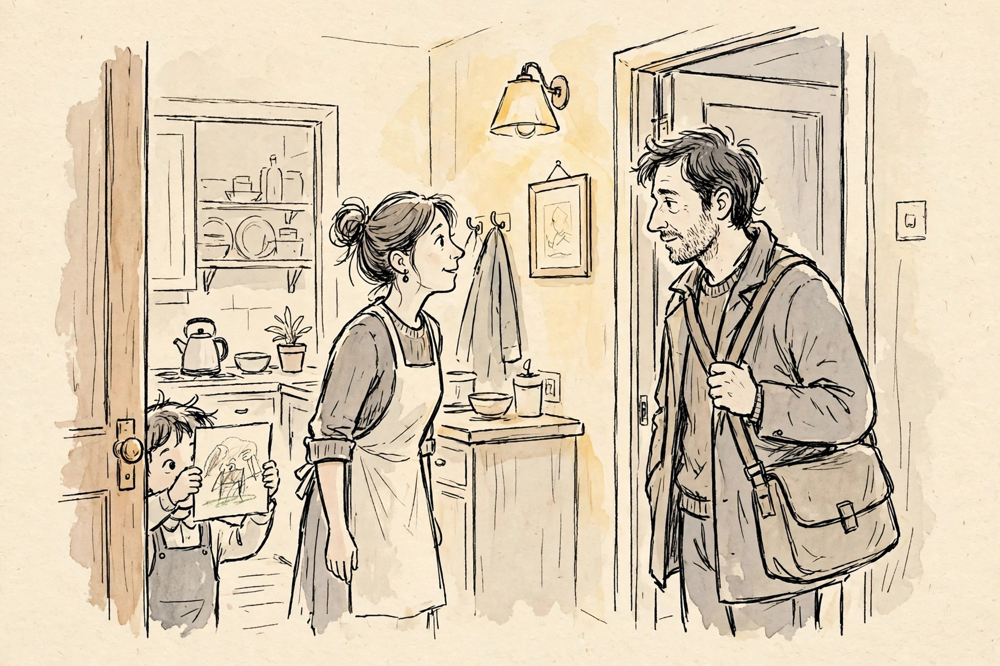

Evening, just after six. I came home tired, the way you are tired after a long day that was not one bad thing but a hundred small ones, and the traffic, and the incident review still sitting in my head, and my bag still on my shoulder, and my keys still in my hand, and Sara said, from the kitchen, “Did you remember to call the school?”
It was an ordinary question. She asked it the way she asks everything, while doing three other things at once. And the sharp reply was already on my tongue before I had even decided to say it.
“Do I have to do everything?”
I said half of it. “Do I have to—” and then I stopped. But the tone was already out, and tone travels faster than words. Sara’s face closed a little, the way a person’s face closes when they have just been handed something sharp for no reason. And in the doorway behind her, my daughter was standing with a drawing in her hand, watching.
The argument was about the school call. It was never about the school call. It was about the day, and the traffic, and the review, and the feeling of being pulled in ten directions, and Sara was the nearest person, and the nearest person is always the easiest place for it to land.
I know, but I can do nothing. It is only a sentence. She knows I am tired. She will let it go. I will apologise later, or I will not, because it was only half a sentence, and half a sentence is not really a thing.
I told myself that story because it let me keep my shoes on and my bag on my shoulder and walk past the moment. It was not true. Half a sentence is a thing. My daughter was watching, and she was learning, in that doorway, what a tired man does when he comes home. And Sara was not asking because she thought I had forgotten. She was asking because she had her own long day, and she was carrying her half of it, and she wanted to know if I was carrying mine.
I stood in the hallway with my bag still on my shoulder, and I gave myself one minute.
What was actually true? I was tired, not angry at her. She had asked a fair question, and she had asked it kindly, and I had answered it with a tone she did not deserve. That was the truth, and it was a small truth, and it did not need a defence.
What would help her, not in general, but right now, in this minute? Not an excuse. An apology without a “but” in it. “Sorry, but I had a hard day” is not sorry. It is an excuse wearing an apology’s clothes.
What was the smallest thing I could do that was true and kind at the same time? Put the bag down. Say, “I’m sorry. That was sharp, and you didn’t deserve it. Tell me about your day first.” I did not need to fix the whole evening. I needed to put the bag down and say the plain thing.
I put the bag down. I walked into the kitchen and I said, “I’m sorry. That was sharp, and you didn’t deserve it. Tell me about your day first.”
Sara looked at me for a second, and then her face opened again, the way a person’s face opens when they realise they are not going to have to carry the evening alone. “It was a long one,” she said. “Yours too, I think.”
We made dinner together, a little late, and the mood was a little tender, the way a mood is tender after someone has said sorry and meant it. Later, my daughter came and sat beside me with her drawing, and she asked, “Daddy, why were you angry?”
I answered her honestly, in simple words. “I was tired, and I was unkind, and I said sorry. When you are tired and unkind, you say sorry too.” She nodded, and she went back to her drawing, and I thought about how children do not remember what you argued about. They remember how you fixed it.
The evening was not perfect. Dinner was late, and we were both still tired, and the school call still needed making. But the evening went a different way, and that is enough to hope for.
Nothing big happened that evening. No one was punished, no policy was written, no one gave a speech. But the evening went a different way, and that is not nothing.
Sara got her evening back. She did not have to carry my sharpness on top of her own long day. She told me about her day, and I listened, and we carried the rest of it together, which is what we are supposed to do, and what I had almost forgotten by the time I walked through the door.
My daughter got a lesson nobody can teach in a document. She saw the snap, and then she saw the repair, and the repair is the part that matters. Children do not remember what you argued about. They remember how you fixed it. She watched me put the bag down and say sorry, and one day, when she is tired and unkind, she will know what to do.
And I got my evening back, mostly. I did not carry to bed the knowledge that I had walked into my own home and handed the sharpest thing I had to the person I love most. But I am not proud of the half-sentence that got out. I am learning that at home, the minute after is shorter, and the people you love do not keep score the way offices do, but they remember the tone longer than the words.
The people you love deserve the minute too.
Put the bag down first. The sharp reply can wait, and usually it doesn’t need to come at all.